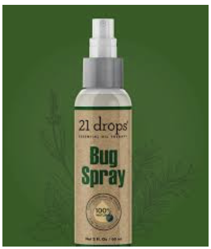

Bugspray
I will carry bugspary to avoid bites from any harmfull bugs/insects like spider and other bugs. Prevetion is better than cure.

In 2016 i went to some place with my family to see islands but i got missed from them in a party whcih is happening on some boat where i was fully drunk and woke up to the feeling of waves crashing on feet. I opened my eyes. I was on a beach on a islands i dont the name of the place and there are no one around me.i dont have my phone or i dont remember also what happend last night.and I didn’t know how I got there, all I could remember was being lost at party from my family.
I will carry bugspary to avoid bites from any harmfull bugs/insects like spider and other bugs. Prevetion is better than cure.
I will carry fishing net to catch fishes and to cook food Food is important to survive.
I will carry flash light. In the darkwe can use it. Without a light we cannot see anything.
It is better to maintain a satellite phone for calling purspose.Some satellite phones use satellites in geostationary orbit, which appear at a fixed position in the sky. These systems can maintain near-continuous global coverage with only three or four satellites, reducing the launch costs Communication for emergency purpose.